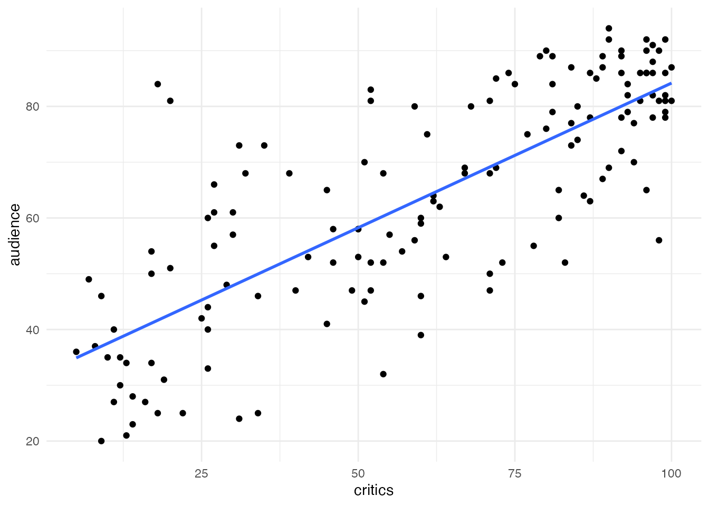
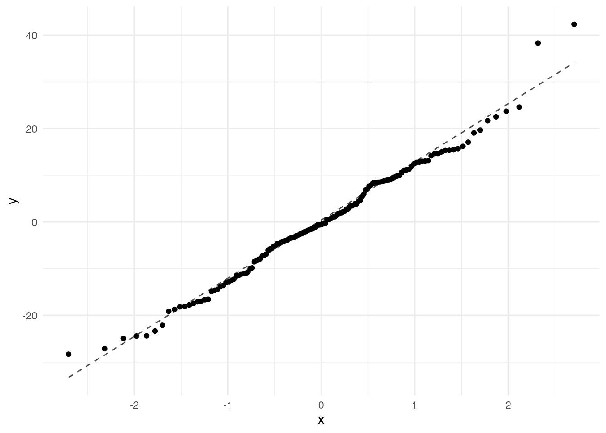
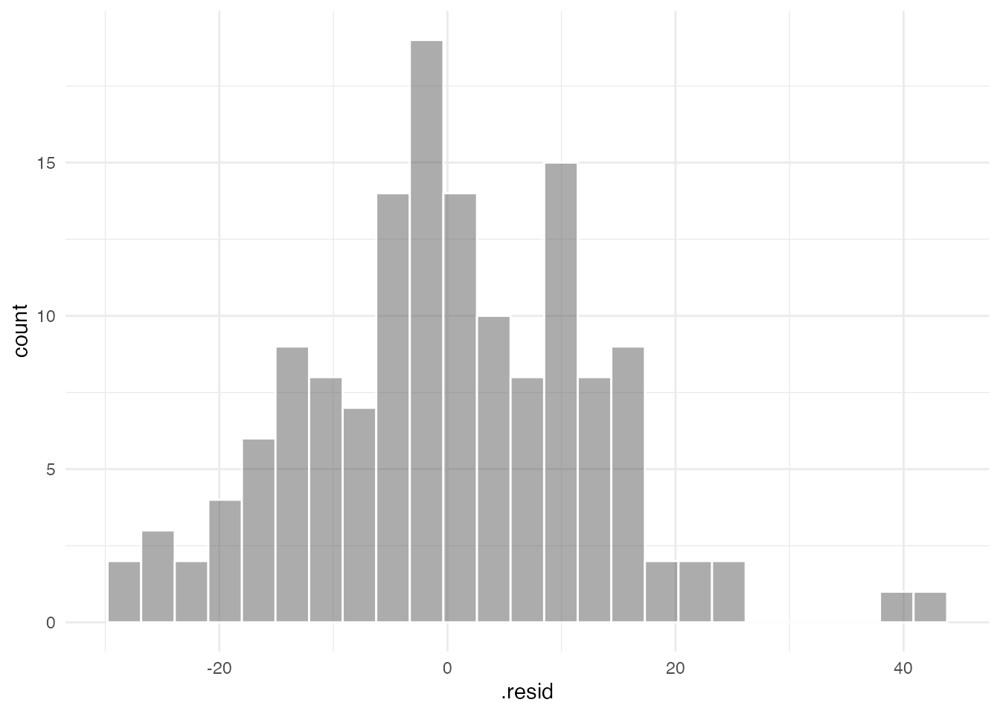
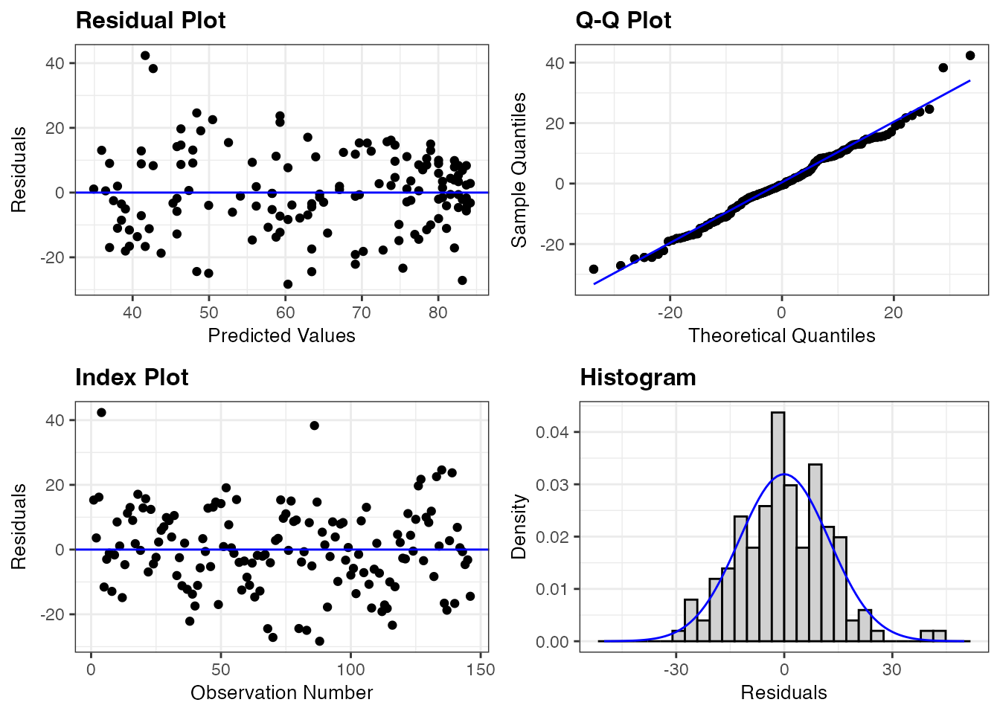

library(tidyverse)
library(ggformula)
theme_set(theme_minimal())05: Conditions
Stat 230 - Spring 2026
Note
This is the quarto version of the R activity, designed for opening in maize/RStudio. If you prefer to use the tutorial version, you can use https://aluby.github.io/stat230/activities/05-conditions-tutorial
Example 1: Making residual plots in R
Recall the movies dataset from the R activity we did on Day 02. (head() prints out the first few rows)
movies <- read.csv("https://aloy.github.io/stat230-materials/data/movie_scores.csv")
head(movies) film year critics audience
1 Avengers: Age of Ultron 2015 74 86
2 Cinderella 2015 85 80
3 Ant-Man 2015 80 90
4 Do You Believe? 2015 18 84
5 Hot Tub Time Machine 2 2015 14 28
6 The Water Diviner 2015 63 62On that day, we made the following scatterplot:
gf_point(audience ~ critics, data = movies) |>
gf_lm()
and fit this regression model:
movie_lm <- lm(audience ~ critics, data = movies)
movie_lm
Call:
lm(formula = audience ~ critics, data = movies)
Coefficients:
(Intercept) critics
32.3155 0.5187 Finding residuals
In order to make residual plots, we first need to find the residuals. While we can do this by hand for a couple of points, it would be extremely tedious to do it for every single data point! Instead, we’ll use the augment() function from the {broom} R package to created an augmented movie dataset. This takes the original X and Y variables and adds the \(\hat{y}\) values (.fitted) and residuals (.resid) (along with some other columns that we’ll use later)
Run the following code chunk and take a peek at the movie_aug dataset. Can you find the:
- original X variable?
- original Y variable?
- Predictions?
- Residuals?
library(broom)
movie_aug <- augment(movie_lm)
movie_aug# A tibble: 146 × 8
audience critics .fitted .resid .hat .sigma .cooksd .std.resid
<int> <int> <dbl> <dbl> <dbl> <dbl> <dbl> <dbl>
1 86 74 70.7 15.3 0.00816 12.5 0.00618 1.23
2 80 85 76.4 3.60 0.0113 12.6 0.000474 0.289
3 90 80 73.8 16.2 0.00963 12.5 0.00818 1.30
4 84 18 41.7 42.3 0.0208 12.1 0.123 3.41
5 28 14 39.6 -11.6 0.0235 12.5 0.0105 -0.934
6 62 63 65.0 -2.99 0.00688 12.6 0.000199 -0.239
7 53 42 54.1 -1.10 0.00954 12.6 0.0000374 -0.0882
8 64 86 76.9 -12.9 0.0116 12.5 0.00633 -1.04
9 82 99 83.7 -1.66 0.0179 12.6 0.000163 -0.134
10 87 89 78.5 8.52 0.0129 12.6 0.00305 0.684
# ℹ 136 more rowsMaking residual plots
The code below makes a normal QQ plot and a histogram of the residuals. Do you think the normality assumption is satisfied?
gf_qq(~.resid, data = movie_aug) |>
gf_qqline()
gf_histogram(~.resid, data = movie_aug, col = "white")

Checkpoint question
Use the movie_aug dataset to make a scatterplot with .fitted on the x-axis and .resid on the y-axis. List the SLR conditions you can assess with this plot, and whether or not they appear to be satisfied.
# your code hereA shortcut
We will make a ton of residual plots this term. A shortcut is to use the resid_panel function within the {ggResidpanel} package:
library(ggResidpanel)
resid_panel(movie_lm)
Checkpoint question
Which panel(s) would you look at for each of the following SLR conditions. List as many panels as possible, along with how you would identify any violations:
Linearity:
Independence:
Normality:
Equal variance:
Example 2: \(R^2\) in R
Checkpoint question
Find the \(R^2\) value for the movie_lm model using summary(). Confirm that it is equal to \(r^2\)
# your code hereSummary
Checkpoint question
Suppose that we fit a linear regression model to a sample of 1,000 observations and we find evidence in the normal Q-Q plot of a violation of the normality assumption, but no evidence in the residual plot of violations of the linearity and constant variance assumptions and no reason to suspect a violation of the independence assumption. Which of the following inferences are valid, and which are not?:
- p-value from the hypothesis test \(H_0: \beta_1 = 0\) vs \(H_A: \beta_1 \ne 0\)
- Confidence interval for \(\beta_1\)
- Confidence interval for the mean of Y at some X value
- Prediction interval for Y at some X value
Function quick reference
The following table summarizes the functions we learned today:
| Function | Purpose |
|---|---|
augment(model) |
Create augmented dataset that includes predictions and residuals |
gf_qq(~variable, data) |
Make a qq plot |
gf_qq_line() |
Overlay a straight line on the qq plot |
resid_panel(model) |
Shortcut for making a panel of residual plots |